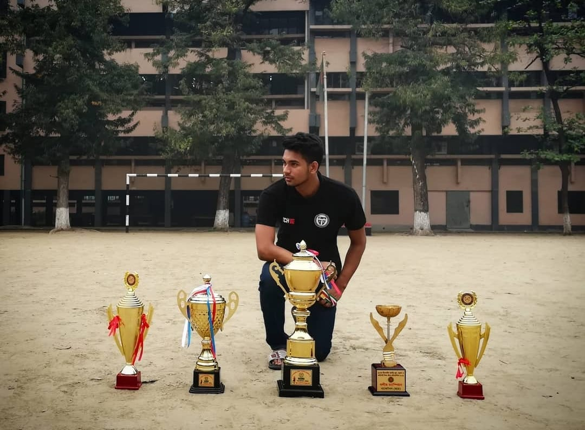

-

Basketball
I find immense joy in playing basketball, as it allows me to channel my passion and energy into a dynamic and exhilarating sport. The thrill of competing on the court and the camaraderie shared with fellow players make basketball an activity I truly love.
-
 Photography
Photography
Photography is not just a hobby, but a profound passion of mine, allowing me to capture and preserve moments in time with artistic vision and storytelling. Through the lens, I find endless inspiration, exploring the world's beauty and emotions, and cherishing the power of a single image to evoke feelings and ignite imagination.
-
Videography
Our website templates are created with inspiration, checked for quality and originality and meticulously sliced and coded. What’s more, they’re absolutely freeI have a deep love for videography, as it enables me to combine my creative vision with the power of motion, sound, and storytelling, creating captivating visual narratives. The process of capturing moments through the lens, editing footage, and bringing a story to life fills me with excitement and fuels my passion for the art of videography.
-
Graphics
I possess a strong proficiency in graphics design, with a comprehensive understanding of design principles, composition, and color theory. I take great pleasure in leveraging my knowledge of graphics design to create visually captivating and impactful designs that effectively communicate messages.
Education
Knowledge is power
Welcome to the website of Tafser Morshed Yeamin, a student of Digital Business and Innovation at Tokyo International University. Tafser is a multi-talented individual with a passion for basketball, graphics design, and web development. Tafser has a remarkable record in basketball, being a back-to-back 3 times national champion in his home country of Bangladesh. His dedication and hard work in the sport have led him to achieve great heights, and he continues to pursue his love for basketball in Tokyo. Apart from basketball, Tafser is also skilled in graphics design, having worked on several projects that showcase his creativity and eye for detail. He has an impressive portfolio of designs that highlight his ability to create visually stunning and impactful works. Tafser is also an experienced WordPress premium web developer, having worked on various projects that require a keen eye for design, functionality, and user experience. His expertise in this area allows him to deliver top-notch websites that meet the needs of his clients. Aside from his talents, Tafser is a natural leader, having held several leadership positions in his academic and professional life. He has a passion for helping others achieve their goals, and his ability to motivate and inspire others is truly remarkable. Lastly, Tafser hails from Bangladesh, a country with a rich cultural heritage. He takes pride in his heritage and incorporates his culture into his work, creating a unique perspective that sets him apart from others. With his diverse set of skills, passion for basketball, leadership experience, and cultural background, Tafser Morshed Yeamin is a well-rounded individual with a lot to offer. Explore his website to learn more about him and his work.
Hobbies
Singing is not merely a hobby for me, but a gateway to express my emotions and connect with others through the universal language of music. The joy and fulfillment I experience when I sing, whether alone or with others, is immeasurable, and it allows me to share my heart and soul in a truly harmonious way.
Tafser